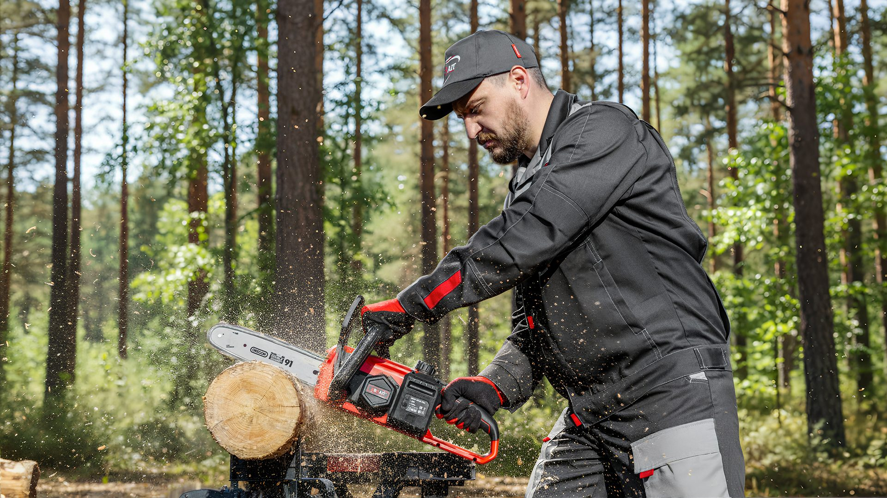
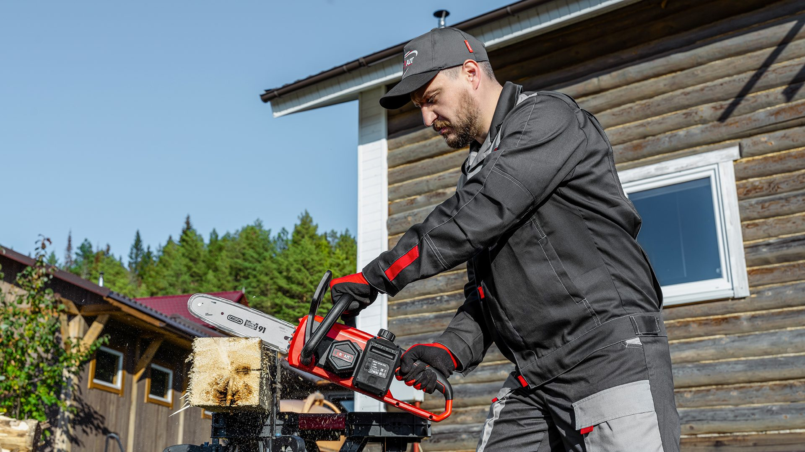

Brait — предметная съёмка, где фон делает нейросеть
Сняли промышленное оборудование для журнала и соцсетей. Вместо дорогостоящей выездной съёмки на локациях — студийный свет и нейросетевая замена фонов.
Задача
Brait производит промышленное оборудование и нуждался в качественных фото для публикации в отраслевом журнале и ведения соцсетей. Выездная съёмка на реальных объектах — дорого и долго: согласования, логистика, непредсказуемый свет. Нужно было найти способ получить разнообразный визуальный ряд без выезда на каждую локацию.
Что сделали
Сняли оборудование в студии с профессиональным постановочным светом — это дало полный контроль над качеством и деталями. Затем с помощью нейросетей заменили студийный фон на контекстные: производственные цеха, склады, объекты применения. В итоге — серия фотографий, каждая из которых выглядит как реальная выездная съёмка.
До и после — студия vs AI-фон
Перетащите разделитель, чтобы увидеть разницу между студийным кадром и финальным вариантом с нейросетевым фоном


Из чего собран проект


Что получилось в цифрах
кадров
фона на кадр
на локации
выездной съёмки
Нужна съёмка с умными фонами?
Расскажите о вашем продукте — разберём, как получить разнообразный визуал без выезда на каждую локацию и с результатом, который не отличить от натурной съёмки.